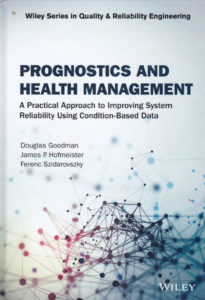

Whenever I can find time, I try to learn something about a field I would normally never encounter but is only a degrees or two of separation away from my core interests. Recently, I was researching expert systems for medical diagnosis and came across the compellingly titled "Prognostics and Health Management" by Ferenc Szidarovszky, et. al (Wiley 2019).

Despite all the right words, PHM is a new approach to preventative maintenance on machines by optimizing maintenance/replacement schedules based upon accurate failure prediction models. These systems use a variety of embedded sensors in an IoT network to monitor equipment, collect data and feed into a data analytic pipeline for prediction.
traditional approaches to statistical analysis and machine learning
high-value physical equipment often found in factories, mines, refineries and farms. Traditionally,
"Prognostics and Health Management" is more widely known as using model-driven, data-driven or both approaches to optimize preventative maintenance on equipment (e.g. factories, mines, refineries, etc). With the rapidly falling price of sensors and compute along with the growth in IoT and the value of data collected intelligent preventative maintenance is hot field.